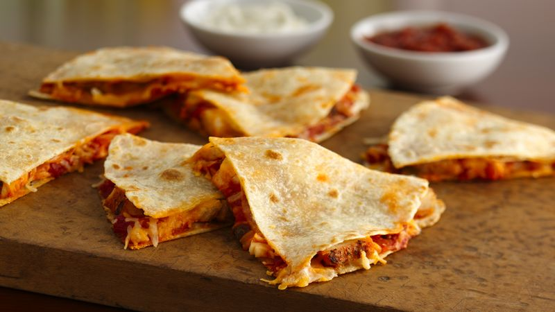

These quick cooking quesadillas are loaded with cheese, salsa and green onions and are perfect for those busy weeknights when you don't have a lot of time. They're easy, kid-friendly and just plain good!
Top half of each tortilla with 1/4 cup cheese, 2 teaspoons green onions and 1 tablespoon salsa. Brush the edges of the tortillas with water. Fold the tortillas over the filling and press to seal.
Heat the oil in a 12-inch skillet over medium-high heat. Add the quesadillas and cook in batches until lightly browned on both sides and the cheese is melted. Serve with the remaining salsa.